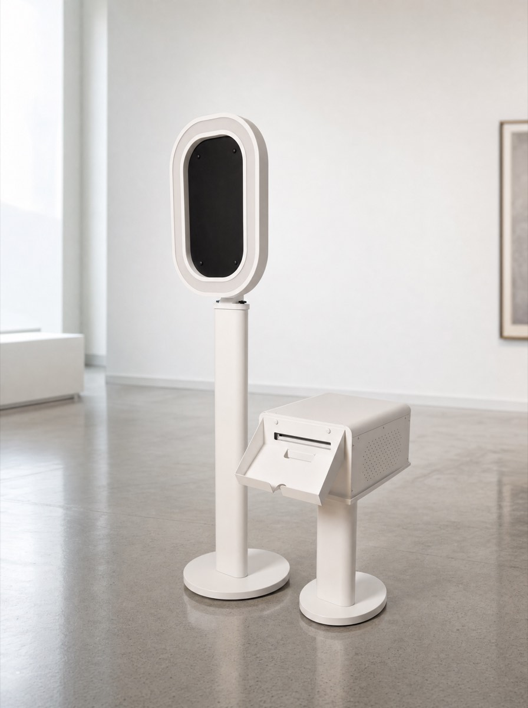
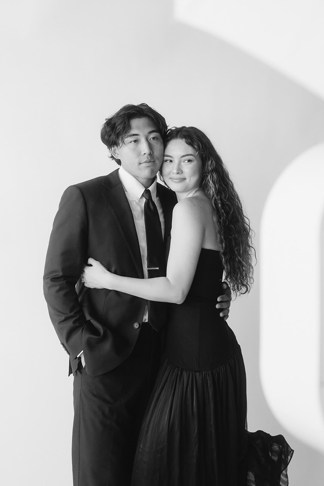

Four Builds
Choose Your Installation
Signature // Oak The foundational form — weighted, considered, present. $949

- Four-hour active exhibition, hand-operated throughout
- Studio DSLR sensors calibrated for true color
- Invisible cabling and full wire containment
- Unlimited matte prints + private high-resolution gallery
The foundational form, the one most clients reach for when they want their gathering to feel weighted, considered, present. Dark oak hardware settles into estates without intruding; the studio optics do the quiet work. Hosts who book this form tend to be planning the kind of evening where the room itself is part of the record. The build holds its tone whether the night runs warm and informal or formal and hushed.
Editorial // Oak Flagship When the room must hold its breath. $1,149
- Four-hour active exhibition, hand-operated throughout
- Studio DSLR tuned for skin, shadow, and archival monochrome
- Invisible cabling and discreet on-site engineering
- Unlimited matte prints + private high-resolution gallery
The flagship. When the room must hold its breath and the prints must read like archive, this is the build we put on the floor. Black-tie evenings, museum-grade gala rooms, anniversary frames meant to outlive the night — the editorial form is configured for that gravity. The output is austere by design: high-contrast monochrome that ages the way good photography is supposed to age. Hosts who choose it are usually thinking about what the frame will look like a decade out.
Modernist // White For the gallery-clean room where the booth disappears. $749

- Four-hour active exhibition, hand-operated throughout
- Studio DSLR calibrated for luminous, true-to-life color
- Invisible cabling, low-footprint install
- Unlimited matte prints + private high-resolution gallery
For the gallery-clean event where the booth must disappear into the architecture — polished concrete floors, white-walled lofts, contemporary museum rooms. The shell reads as part of the room rather than a guest at the room's edge. Color rendering stays luminous and unfussy. Often booked by clients who have already worked hard on the room and want every additional element to retreat by a measured half-step rather than compete.
Monochrome // White Monochrome answer when restraint is the palette. $949

- Four-hour active exhibition, hand-operated throughout
- Studio DSLR tuned for razor-sharp black-and-white
- Invisible cabling, full wire containment
- Unlimited matte prints + private high-resolution gallery
The monochrome answer when the celebration's palette is its own restraint — white shell, black frames, no decorative noise between the guest and the lens. Often the right setup for a corporate gala that needs to read as serious, or a wedding where the couple has chosen black-and-white as the discipline of the evening. The output is graphic, decisive, and easy to hang. Clean install, clean exit, clean record.